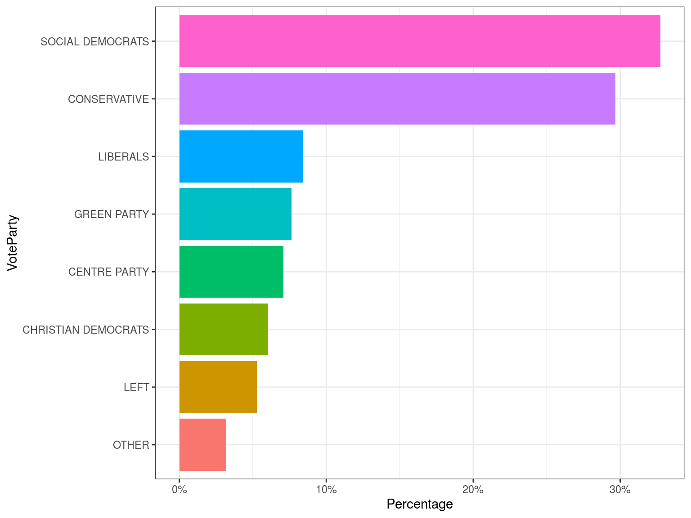

Swedish Election 2006
Who votes for Social Democrats?
What variables are important?
What model should we use?
Dependant Variable:
Vote for democrats
Vote for other parties
Linear Regression Model
Logit Model
\[P(X=1|X_1,X_2,...,X_k)=F(\beta_0+\beta_1X_1+...+\beta_kX_k) \]
\[F(x)=\frac{1}{1+e^{-x}}\] Transform into linear:
\[Odds = \frac{\operatorname{Pr}(y=1 | \mathbf{x})}{1-\operatorname{Pr}(y=1 | \mathbf{x})}\]
\[\ln \left[Odds\right]=\mathbf{x} \boldsymbol{\beta}\]
Logit:
A Logit model is a regression model where the dependent variable is a categorical, binary (zero or one) variable.
Probit:
The probit model is similar to the logit model, but uses the CDF form the normal distribution instead of the logistic distribution.
The larger the value of accuracy, the better the model?
| observed | predicted |
|---|---|
| 0 | 0 |
| 0 | 0 |
| 0 | 0 |
| 0 | 0 |
| 1 | 0 |
| 0 | 0 |
| 0 | 0 |
| 0 | 0 |
| 0 | 0 |
| 1 | 0 |
\[Accuracy = \frac{right}{right + wrong} = \frac{8}{8 + 2} = 0.8\]
| observed | predicted |
|---|---|
| 0 | 0 |
| 0 | 0 |
| 0 | 0 |
| 0 | 1 |
| 1 | 1 |
| 0 | 1 |
| 0 | 0 |
| 0 | 0 |
| 0 | 0 |
| 1 | 0 |
\[Accuracy = \frac{right}{right + wrong} = \frac{7}{7 + 3} = 0.7\]
| observed | guessing | predicted |
|---|---|---|
| 0 | 0 | 0 |
| 0 | 0 | 0 |
| 0 | 0 | 0 |
| 0 | 0 | 1 |
| 1 | 0 | 1 |
| 0 | 0 | 1 |
| 0 | 0 | 0 |
| 0 | 0 | 0 |
| 0 | 0 | 0 |
| 1 | 0 | 0 |
guessing: 80%
Perform a model: 70%
European Social Survey, which is a biannual multicountry survey.
Measures attitudes, beliefs and behaviours across the European Union.
Survey from 2006 and contains a total of 487 variables from 1927 respondents.
We use a total of 24 variables from this dataset.

| VarName | Measure | ExpEffect |
|---|---|---|
| TradeUn | Trade Union membership | Neg. |
| PoInt | Political interest | Neg. |
| FamSize | Size of family | Pos. |
| Area | Urbanisation | Pos. |
This is our Logit model:
| Coefficients | Estimate | Significant | ExpValue |
|---|---|---|---|
| Intercept | -0.51 | NA | NA |
| PoInt | 0.17 | Yes | Neg. |
| TradeUn | -0.53 | Yes | Neg. |
| FamSize | -0.11 | Yes | Pos. |
| Area | 0.07 | No | Pos. |
Individual #18 from our data is our test subject.
| Nr | PoInt | TradeUn | FamSize |
|---|---|---|---|
| 1 | 0.03 | 0.00 | -0.05 |
| 2 | 0.00 | 0.10 | -0.02 |
| 3 | -0.04 | 0.17 | 0.00 |
| 4 | -0.08 | NA | 0.02 |
| 5 | NA | NA | 0.04 |
Break up variables into dummies and perform tests
| Variable | p_value | Reject | Constant_scale |
|---|---|---|---|
| PoInt | 0.27 | no | Yes |
| TradeUn | 0.72 | no | Yes |
| FamSize | 0.36 | no | Yes |
| Area | 0.00 | yes | No |
| Coefficients | Estimate | Significant |
|---|---|---|
| Intercept | -0.34 | NA |
| PoInt | 0.10 | Yes |
| TradeUn | -0.31 | Yes |
| FamSize | -0.06 | Yes |
| Area | 0.04 | No |
| Obs. 0 | Obs. 1 | |
|---|---|---|
| Pred 0 | 711 | 177 |
| Pred 1 | 583 | 295 |
| Obs. 0 | Obs. 1 | |
|---|---|---|
| Pred 0 | 818 | 207 |
| Pred 1 | 476 | 265 |
Logit accuracy = 61.1%
Probit accuract = 61.3%
A small difference of 0.02%
Probit > Logit in terms of accuracy
Author:
Claes Kock
Mayara Latrech
Yuchong Wu
This presentation can be found on:
www.yu-chong.com/projects/vote
and you are welcome to give us feedback